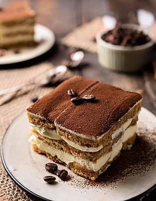

Tiramisu

Preparation Time: 20 min (+ chilling)
Difficulty: Medium
Ingredients
- Ladyfinger biscuits
- 1 cup strong coffee
- 1 cup mascarpone cheese
- ½ cup cream
- ¼ cup sugar
- Cocoa powder
Instructions
- Dip biscuits quickly in coffee.
- Whip cream + sugar + mascarpone.
- Layer: biscuits → cream → repeat.
- Dust cocoa powder on top.
- Chill for 4–6 hours.